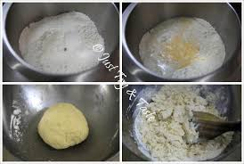
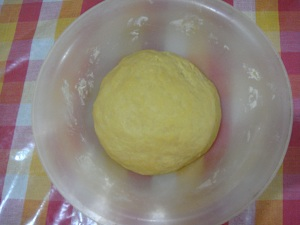

Resep Roti Maryam

Bahan-bahan
- 250gr tepung terigu
- 1 butir telur
- 3 sdm margarin,lelehkan
- 100 ml air hangat
- 2 sdm susu bubuk
- 1/2 sdm garam
- margarin leleh untuk olesan
- minyak untuk merendam
Langkah-Langkah
- Campur semua bahan roti jadi satu

- Uleni adonan sampai kalis
- Kalisnya adonan tidak seklais adnonan roti ya...,seperti ini sudah cukup
